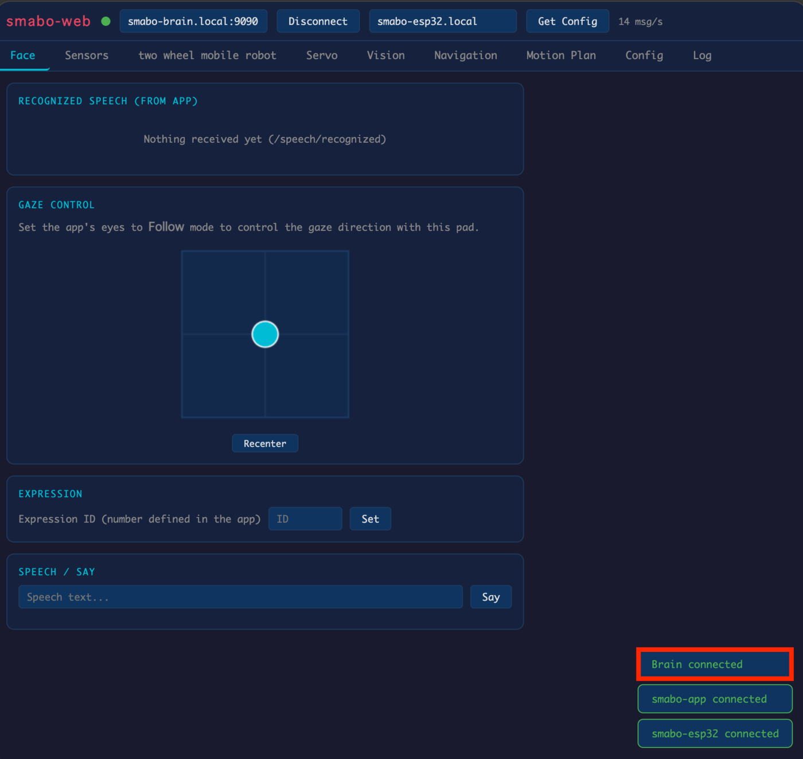
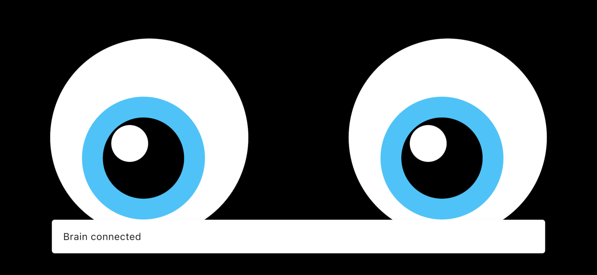
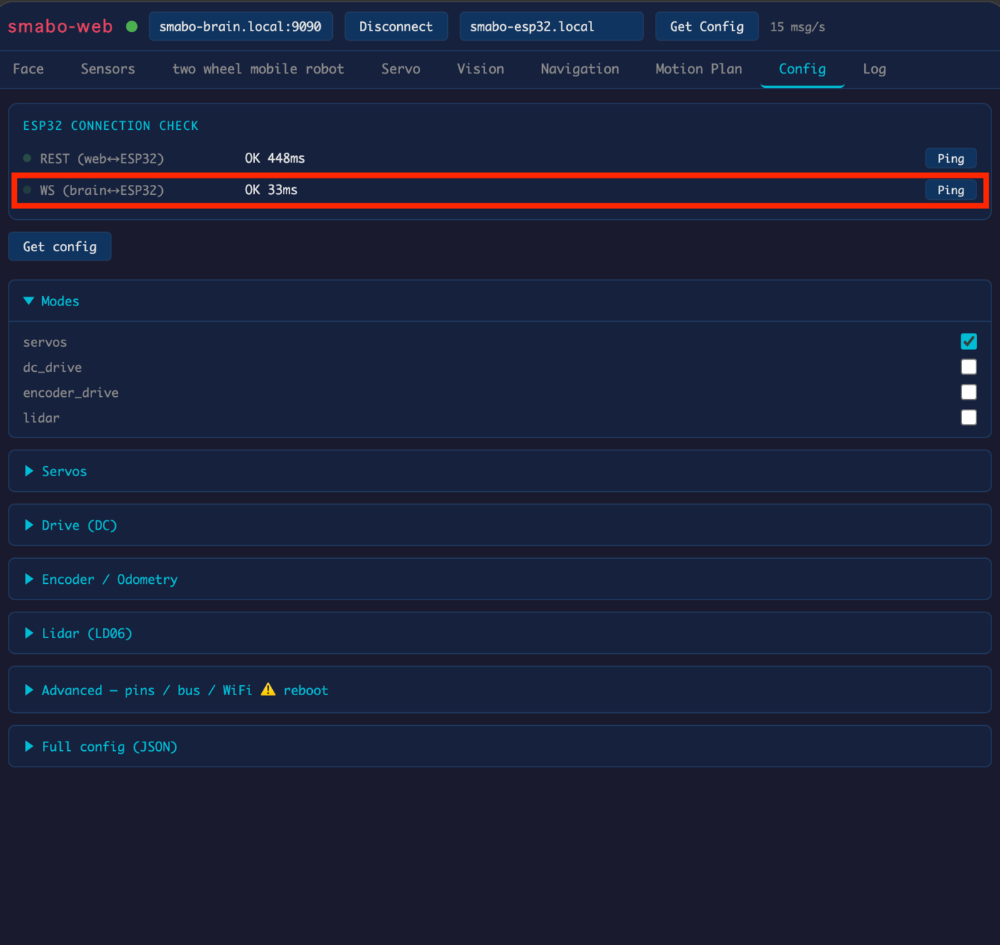
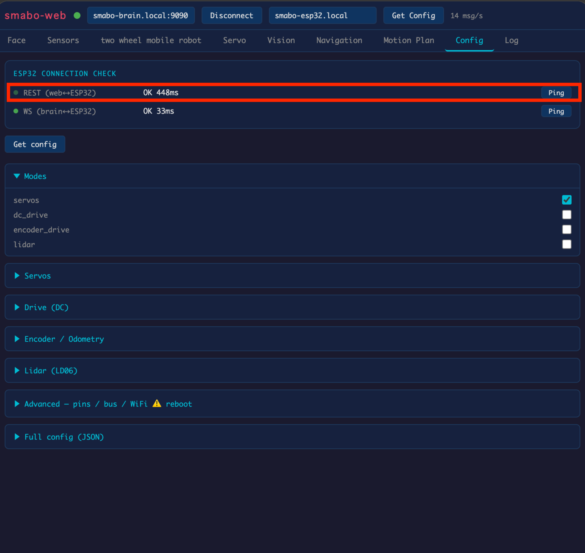

All devices (smartphone, PC, SBC, ESP32) must be connected to the same network before proceeding.
Launch smabo-brain#
First, launch smabo-brain from your PC or SBC.
cd ~/smabo-brainpython3 -m brainLaunch smabo-web#
Next, launch smabo-web from your PC.
cd ~/smabo-webnpm run devThen open your browser and access http://localhost:5173.
smabo-brain <-> smabo-web Connection#
When smabo-web loads, "Brain connected" should appear in the bottom-right corner.

Connect smabo-app#
Launch smabo-app and wait a moment. When "Brain connected" appears, the connection is established.

smabo-brain <-> ESP32 Connection#
Click the "Ping" button to the right of "WS (brain <-> ESP32)". If "OK" is displayed, the connection is successful.

If the connection fails
If the ping test fails, check the WiFi settings in
config.json. If there is an error, correct it and re-flash the firmware to the ESP32.
smabo-web <-> ESP32 Connection#
In the "Config" tab, click the "Ping" button to the right of "REST (web <-> ESP32)". If "OK" is displayed, the connection is successful.
